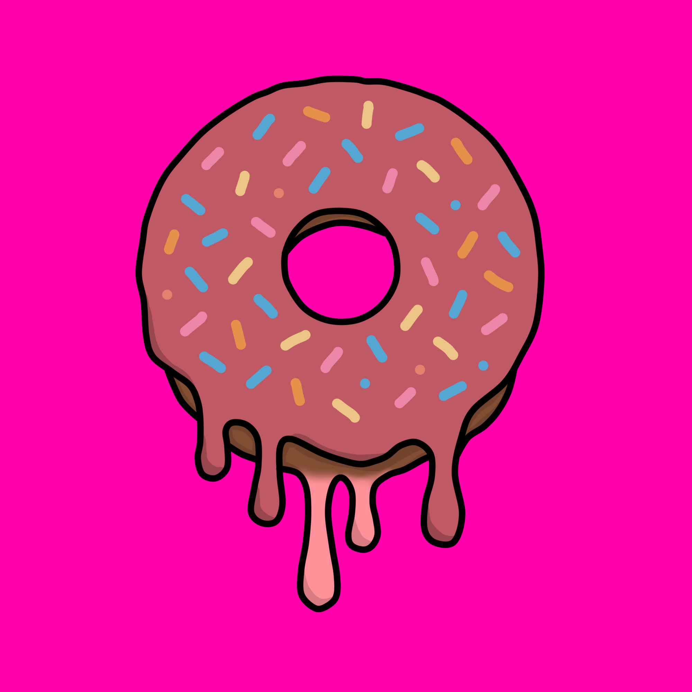
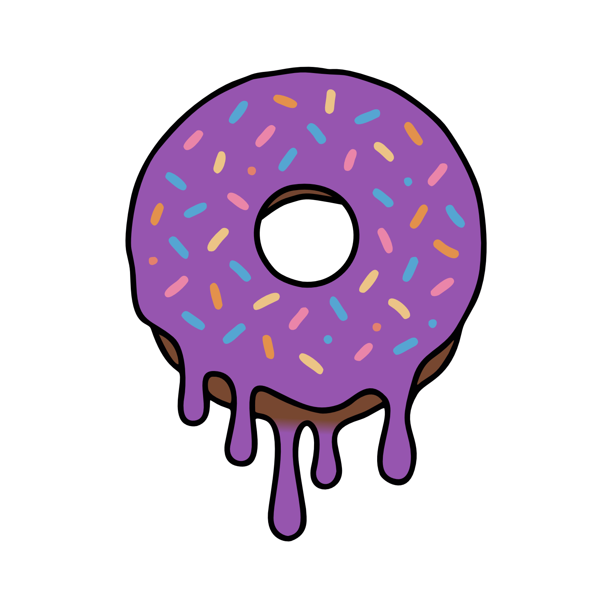
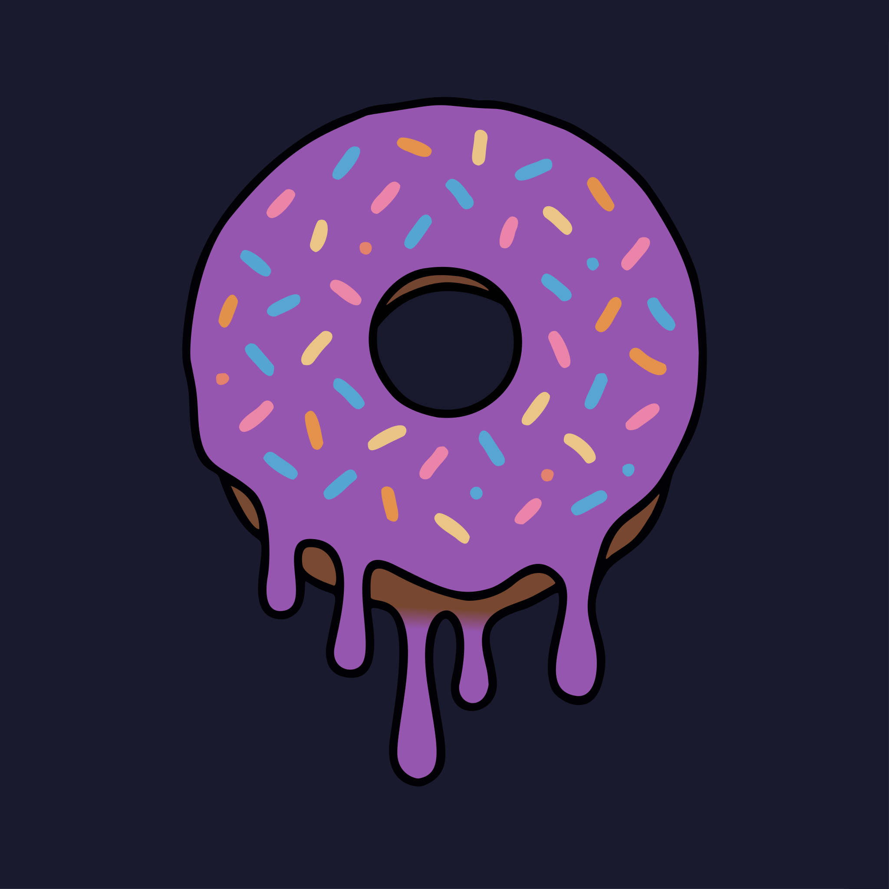

Who is Donut?
I am a solo multimedia developer creating public-facing digital experiences, graphic design, and branded web work, with projects affiliated with Aventix Productions, a Roblox creator group with 33K+ members.
Media kit
Here you will find approved logos, colors, type guidance, and quick facts for press, partnerships, and affiliated creator-group projects.
A concise overview to copy into press releases, partner decks, store listings, and creator collaborations.
I am a solo multimedia developer creating public-facing digital experiences, graphic design, and branded web work, with projects affiliated with Aventix Productions, a Roblox creator group with 33K+ members.
I design and develop Roblox experiences, environment art, graphic design, and supporting web or media systems.
Donut is a multidisciplinary multimedia developer specializing in immersive Roblox experiences, brand systems, and visually rich graphics, with affiliated work tied to Aventix Productions.
Use these approved marks on dark and light backgrounds. Keep clear space equal to the height of the inner ring.

Best for light or neutral backgrounds.

A more bright, vibrant take on the logo for energetic hero moments.

A transparent option for use on dark or complex backgrounds.

Best on dark gradients and photo backdrops.
Use the vector file for print, large formats, and production layouts.

Primary colors used across UI, branding, and motion design.
Primary fonts and usage guidance for headlines and body copy.
Playfair Display, 600 weight. Use for hero statements and editorial headings.
Montserrat, 400-600 weights. Use for product copy, UI text, and supporting content.
Space Mono, 400 weight. Use for data, captions, and technical notes.
Keep the Donut identity consistent and recognizable.
Press or partnership requests can reach Donut at contact email.
{kind=link}
{kind=link}
{kind=link}